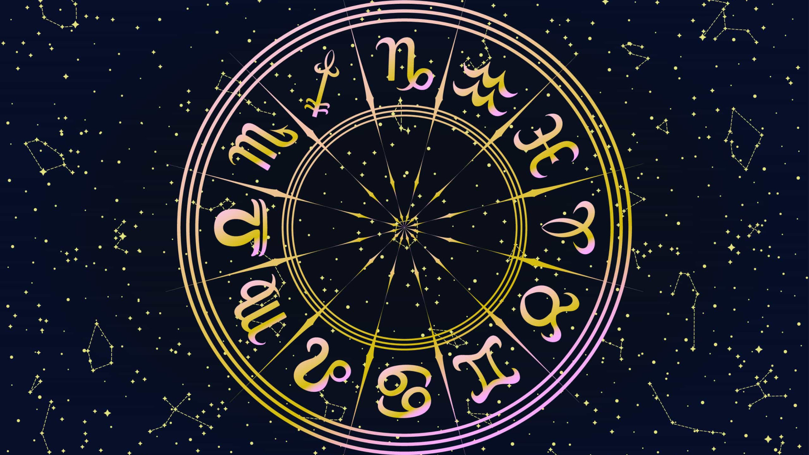

O que é Signo
Signo, também conhecido como signo do zodíaco, é um conceito utilizado na astrologia para descrever a posição do Sol no momento do nascimento de uma pessoa. A astrologia é um sistema de crenças que estabelece uma conexão entre os movimentos dos corpos celestes e os eventos e características da vida humana. Existem 12 signos do zodíaco, que são agrupados de acordo com as constelações que o Sol atravessa ao longo do ano. Os signos são: Áries, Touro, Gêmeos, Câncer, Leão, Virgem, Libra, Escorpião, Sagitário, Capricórnio, Aquário e Peixes.
Na tabela abaixo mostramos os signos do zodíaco, o período em que eles vigoram e o planeta que pertencem:
Em astrologia, o planeta regente de cada signo representa a energia e características associadas a esse signo em particular. Aqui está a lista dos planetas regentes de cada signo do zodíaco:
Tabela de Signos
| Signo | Periodo | Planeta | |
|---|---|---|---|
| Áries | 21 de março a 20 de abril | Marte | |
| Touro | 21 de abril a 20 de maio | Vênus | |
| Gêmeos | 21 de maio a 20 de junho | Mercúrio | |
| Câncer | 21 de junho a 22 de julho | Lua | |
| Leão | 23 de julho a 22 de agosto | Sol | |
| Virgem | 23 de agosto a 22 de setembro | Mercúrio | |
| Libra | 23 de setembro a 22 de outubro | Vênus | |
| Escorpião | 23 de outubro a 21 de novembro | Marte | |
| Sagitário | 22 de novembro a 21 de dezembro | Júpter | |
| Capricórnio | 22 de dezembro a 20 de janeiro | Saturno | |
| Aquário | 21 de janeiro a 18 de fevereiro | Urano | |
| Peixes | 19 de fevereiro a 20 de março | Netuno | |
Zodíaco
O zodíaco é uma faixa imaginária na esfera celeste que é dividida em 12 partes iguais, cada uma correspondendo a um signo astrológico. É uma das principais referências da astrologia ocidental. O zodíaco é baseado no movimento aparente do Sol ao redor da Terra ao longo do ano.
Marcia Sensitiva
Márcia Sensitiva ou mais recentemente como Sense Márcia, é uma clarividente, sensitiva, numeróloga, médium, astróloga, mestre de reiki, apresentadora de televisão, palestrante e escritora brasileira conhecida por suas participações em programas de TV brasileiros
Aries
Os arianos são frequentemente vistos como corajosos, enérgicos e impulsivos. Eles são líderes naturais, cheios de entusiasmo e determinação. Podem ser competitivos e assertivos, mas também podem ser impacientes e impetuosos.
Touro
Os taurinos são conhecidos por sua estabilidade, praticidade e determinação. São pessoas leais, pacientes e confiáveis. Valorizam o conforto, a segurança e os prazeres sensoriais. Por vezes, podem ser teimosos e apegados às suas opiniões.
Gêmeos
Os geminianos são curiosos, comunicativos e versáteis. Eles têm uma mente ágil e gostam de aprender e compartilhar conhecimentos. São sociáveis e adaptáveis, mas também podem ser superficiais e inconstantes.
Câncer
Os cancerianos são sensíveis, intuitivos e emocionais. Valorizam a família, o lar e as relações íntimas. São compassivos e empáticos, mas também podem ser excessivamente protetores e emocionalmente sensíveis.
Leão
Os leoninos são carismáticos, generosos e autoconfiantes. Têm uma presença dominante e gostam de ser o centro das atenções. São criativos, leais e afetuosos, mas podem ser autoritários e exigentes.
Virgem
Os virginianos são meticulosos, práticos e analíticos. São observadores atentos aos detalhes e buscam a perfeição em tudo o que fazem. São organizados, responsáveis e confiáveis, mas também podem ser críticos e preocupados em excesso.
Libra
Os librianos são diplomáticos, sociáveis e equilibrados. Valorizam a harmonia, a justiça e os relacionamentos harmoniosos. São charmosos, gentis e têm uma natureza pacífica, mas podem ter dificuldade em tomar decisões e serem indecisos.
Escorpião
Os escorpianos são intensos, corajosos e passionais. Possuem uma natureza enigmática e são movidos pela emoção. São determinados, perspicazes e têm uma grande capacidade de regeneração, mas também podem ser desconfiados e ciumentos.
Sagitário
Os sagitarianos são aventureiros, otimistas e expansivos. Têm uma sede de liberdade e buscam constantemente conhecimento e novas experiências. São entusiasmados, honestos e extrovertidos, mas também podem ser impulsivos.
Capricórnio
Os capricornianos são ambiciosos, disciplinados e responsáveis. Possuem um forte senso de dever e são determinados a alcançar seus objetivos. São práticos, confiáveis e têm uma abordagem séria da vida, mas também podem ser reservados e pessimistas.
Aquário
Os aquarianos são progressistas, idealistas e independentes. Valorizam a liberdade individual e a igualdade. São intelectuais, originais e têm uma mente aberta. São amigáveis e humanitários, mas também podem ser imprevisíveis e distantes emocionalmente.
Peixes
Os piscianos são sonhadores, sensíveis e compassivos. São altamente intuitivos e emocionais. Possuem uma grande empatia pelos outros e são criativos. São generosos, intuitivos e podem se adaptar facilmente a diferentes situações, mas também podem ser escapistas e indecisos.